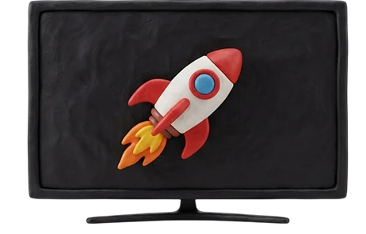
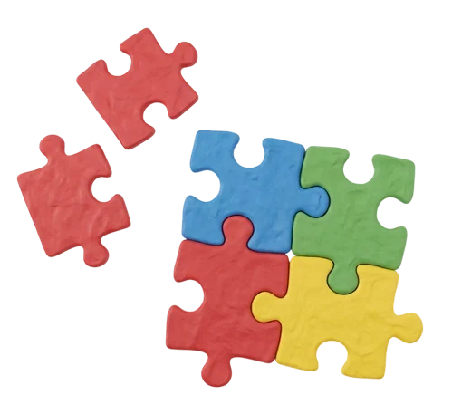
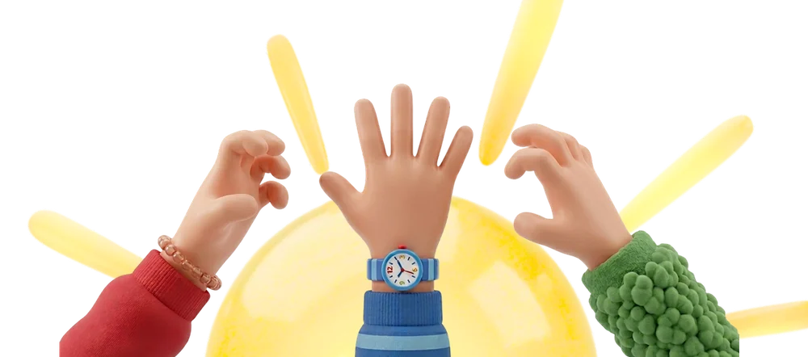
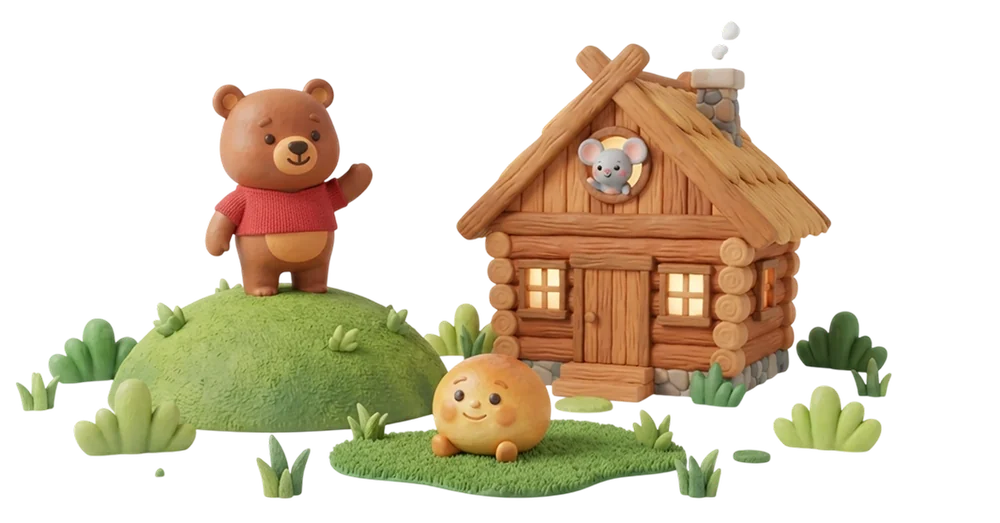
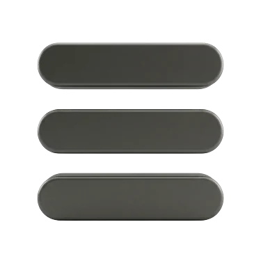
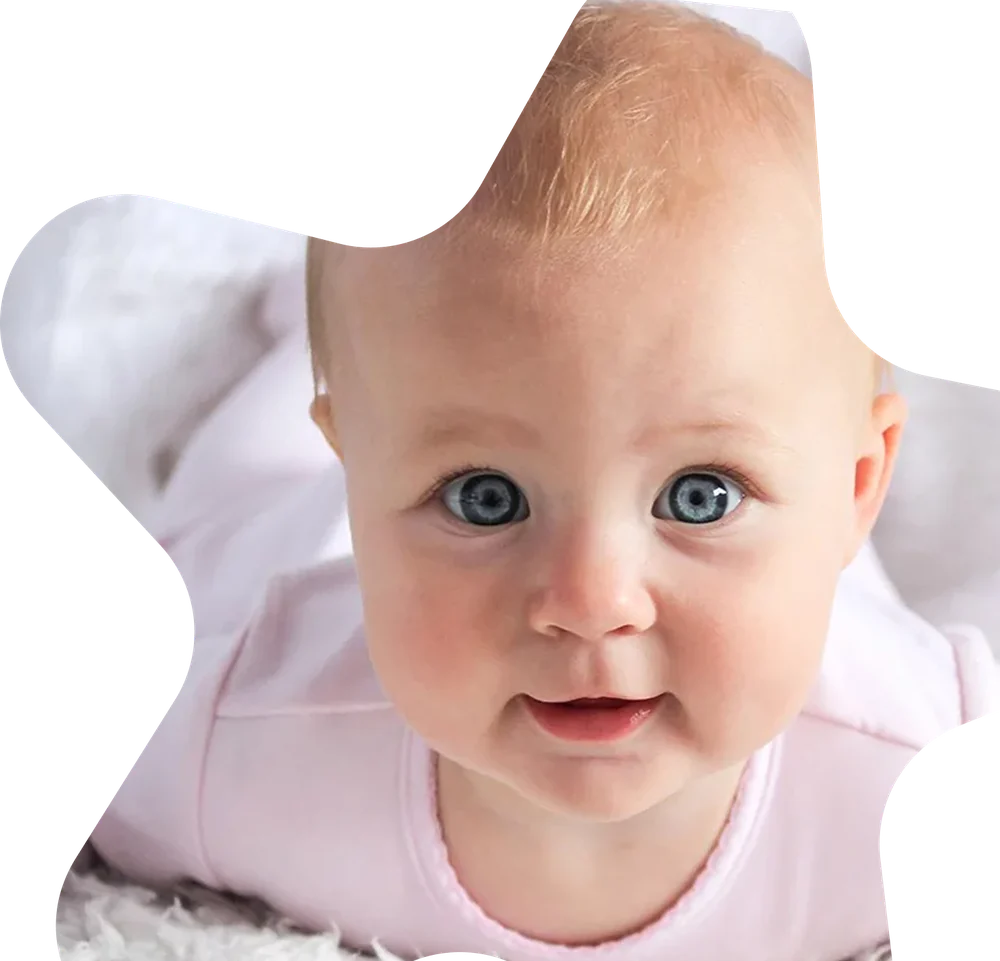
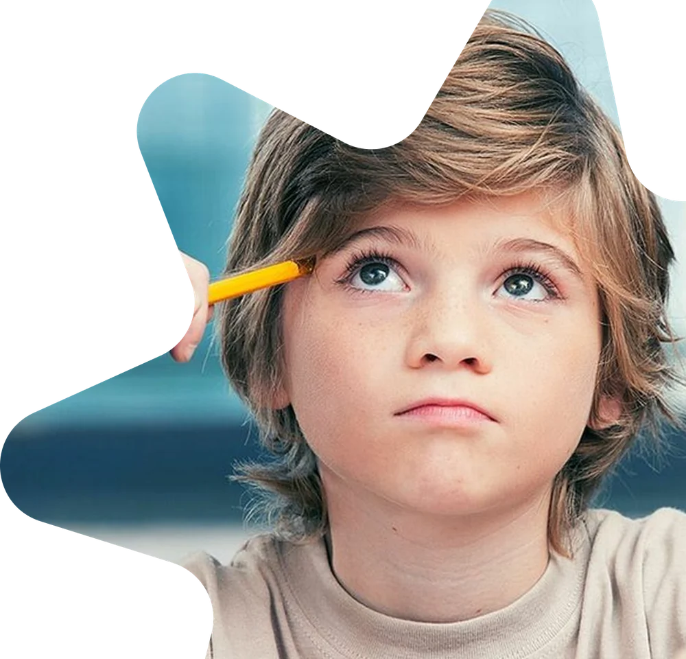
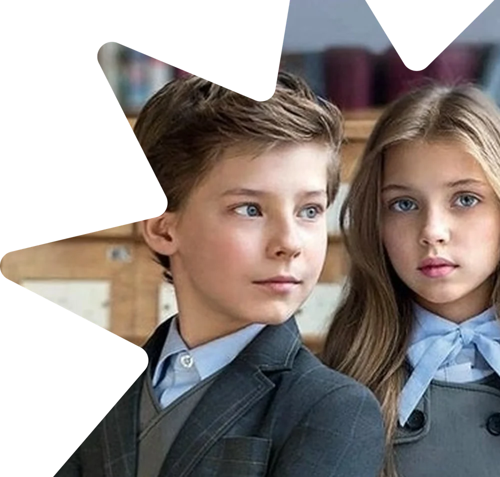

Сказки и открытиявместе с малышом

Космос, природаи мир вокруг

Наука, технологиии человек

Напиши тему, название или возраст
Выберите, как вам удобнее читать и смотреть материалы.
Настройки и прогресс сохраняются только в этом браузере.
Здесь собраны истории, статьи и занятия, которые помогают провести время в детском отделении. Материалы можно выбирать по теме и возрасту.
Сайт создан для досуга и знакомства с новыми темами. По вопросам самочувствия и лечения обращайтесь к сотрудникам отделения.
Ответы на вопросы о сайте и материалах.
На главной странице откройте блок «По возрастам» или выберите тему в разделе «Контент». В списке материалов можно выбрать возраст и формат.
Проверьте подключение к интернету и обновите страницу. Если сайт открыт внутри Telegram, попробуйте открыть его в браузере телефона.
Они сохраняются на вашем телефоне в том браузере, где вы открыли сайт. На другом устройстве или после очистки данных браузера их может не быть.
Видео в сторис запускаются без звука. Звук можно включить или выключить в самой сторис. Чтобы уменьшить движение и увеличить текст, откройте «Меню» → «Настройки».
Откройте в меню вкладку «Ярлык». Там есть шаги для iPhone и Android.
Сайт помогает провести время. Если ребёнку нехорошо или есть вопросы о лечении, обратитесь к сотрудникам отделения.
Добавьте «Детскую страницу» на экран телефона. Она будет открываться отдельным окном без адресной строки браузера.
Откройте сайт в Chrome. В меню ⋮ выберите «Установить приложение» или «Добавить на главный экран».
Для новых материалов и некоторых страниц понадобится интернет. На некоторых телефонах прогресс и настройки из браузера не переносятся в ярлык.
Пройденные занятия «Первых шагов» станут непройденными только в этом браузере.